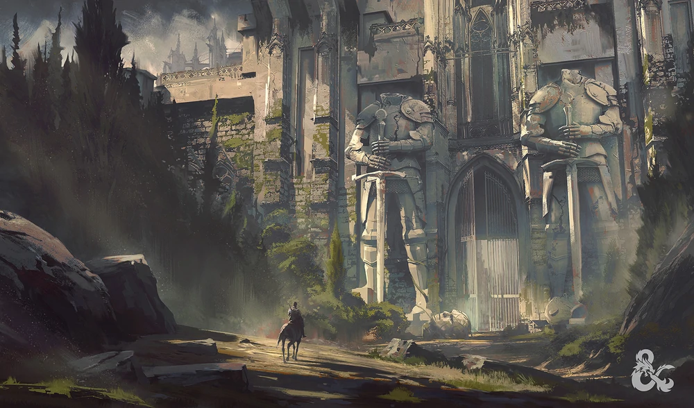

Black pools of water stand like dark mirrors in and around the muddy roadway. Giant trees loom on both sides of the road, their branches clawing at the mist.
The fog spills out of the forest to swallow up the road behind you. Ahead, jutting from the impenetrable woods on both sides of the road, are high stone buttresses looming gray in the fog. Huge iron gates hang on the stonework. Dew clings with cold tenacity to the rusted bars.